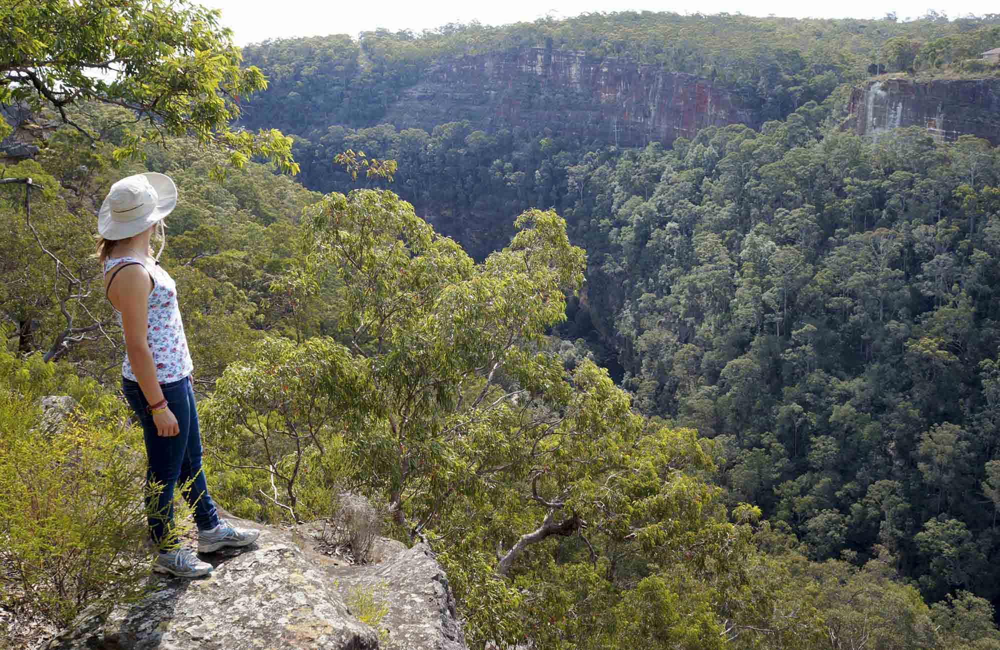

Opera House, Sydney
Flanked by the scenic Harbor Bridge and the beautiful Royal Botanic Gardens, the Sydney Opera House is one of the most popular Australian tourist attractions. Considered as an architectural masterpiece of the century, this feat by mankind, hosts multiple venues designed to reflect the image of a huge sailing ship and resembles billowing sails or shells.
Great Barrier Reef
One of the seven wonders of the natural world, the world’s largest barrier reef system is the Great Barrier Reef. Located in the Coral Sea, this world heritage-listed site is visible from outer space and is one of the largest living structures on the planet. It occupies a mammoth area including more than 3000 coral reefs and hundreds of scenic Islands.
Harbor Bridge, Sydney
 Among the most celebrated Australia tourist attractions, the Sydney Harbor Bridge is a must-visit. Rising 134 m above the harbor, the bridge is affectionately called “the Coat hanger”. This engineering marvel is also the largest steel arch
bridge in the world.
Among the most celebrated Australia tourist attractions, the Sydney Harbor Bridge is a must-visit. Rising 134 m above the harbor, the bridge is affectionately called “the Coat hanger”. This engineering marvel is also the largest steel arch
bridge in the world.
Blue Mountains National Park

The beautiful Blue Mountains National Park another UNESCO World Heritage Site – is a popular day trip from Sidney. It is named after the blue haze emanating from the many eucalyptus trees, which is a spectacular panoramic view to behold!
Things To See: Three Sisters a sandstone rock formation towering 900 meters above the Jamison Valley, majestic views of gorges, paintings, and exotic wildlife species.
Great Ocean Road
Located in Victoria, the Great Ocean road is considered to be one of the most scenic and best driven roads in the world. Don’t miss Twelve Apostles, the spectacular formations of limestone stacks beside the stunning turquoise ocean. The 243 km ride from Torquay to Allansford is itself a blissful drive. Things To See:Port Campbell National Park, Otway National Park, picturesque rain forest, hiking trails and scenic waterfalls.
Sky diving in Melbourne
 If you're an adventurous soul roaming around Melbourne, you'd certainly want to check out the numerous skydiving schools here. It's a mind-blowing experience as you free fall over to some of the gorgeous landscapes looking amazing right below
you.
If you're an adventurous soul roaming around Melbourne, you'd certainly want to check out the numerous skydiving schools here. It's a mind-blowing experience as you free fall over to some of the gorgeous landscapes looking amazing right below
you.
Things To See:Sky diving over the Yarra Valley or The Great Ocean Road.